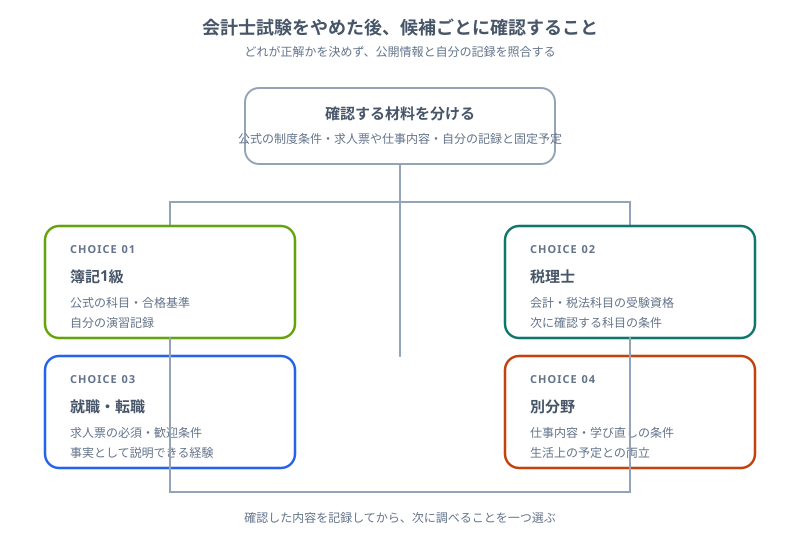

公認会計士を諦めた後の進路は？後悔しにくい選び方を正直に整理
こんにちは、大谷です！
「会計士を諦めようか迷っている」「撤退したけれど、これからの人生どうすればいいんだ……」と、暗い部屋でフリーズしていませんか？（その苦しさ、痛いほど分かります）
毎日会計士のテキストと3,000時間以上格闘してきた僕の視点から、今までの積み上げを1ミリも無駄にせず、あなたが次のステージで後悔なく大無双するための【現実的な4つの新進路】を、同じチャレンジャーの目線で熱くナビゲートします。
また、記事の末尾のほうにある【いいねボタン】のプッシュをお願いします。
まず伝えたいこと：公認会計士を諦めたこと自体が失敗ではない
最初にこれはかなり大事です。公認会計士を諦めたこと自体が、そのまま失敗だとは限りません。
会計士試験は要求水準が高く、勉強時間も長く、生活やメンタルへの負荷も大きい試験です。そこで一度立ち止まることは、逃げではなく判断であることも多いです。
最初に整理すべき3つの問い
試験の重さがつらかったのか、会計そのものが合わなかったのかで次の進路はかなり変わります。
就職・転職を優先するのか、資格ルートを続けるのかで時間の使い方が変わります。
積み上げを活かしたいなら簿記1級や税理士が自然ですし、気持ちを切り替えたいなら別分野も十分ありです。

進路1：簿記1級へ切り替える
いちばん自然な選択肢のひとつです。特に財務会計論、管理会計論、原価計算の勉強がある程度進んでいた人は、簿記1級にかなり活かせます。
- 会計分野の勉強経験をそのまま活かしやすい
- 会計士より短いスパンで目標を置きやすい
- 経理・会計職への就職や転職で説明しやすい
一方で、会計士への未練だけで簿記1級に移ると、また苦しくなることもあります。簿記1級を「次の明確な目的」にできるかが大事です。
進路2：税理士を目指す
会計・税務の世界に残りたい人にとって、税理士はかなり有力です。公認会計士より長期戦になりやすい一方、科目合格制なので進め方に柔軟性があります。
- 簿記論・財務諸表論は会計士学習とつながりやすい
- 一発勝負感が会計士より弱く、自分のペースを作りやすい
- 会計・税務の専門職としての軸は残せる
ただし、税法科目に入ると別のしんどさがあります。会計士より楽そう、という理由だけで選ぶとギャップが出やすいです。
進路3：就職・転職に切り替える
これはかなり現実的ですし、全く後ろ向きではありません。特に、大学生や20代なら早めに実務へ入る価値も大きいです。
| 進路 | 活かしやすいこと | 向いている人 |
|---|---|---|
| 経理・会計職 | 簿記、会計知識、継続力 | 会計分野で働きたい人 |
| 事務職 | 数字への抵抗のなさ、基礎会計 | 安定して働きたい人 |
| 金融・保険 | 数字の理解、資格学習経験 | 業界に興味がある人 |
| 一般企業の管理部門 | 会計リテラシー、努力の継続 | 資格一本より実務重視の人 |
ここでは「会計士に受からなかった」ではなく、「会計士を目指す中で会計知識と継続力を積んだ」と言語化できるかが大事です。
進路4：会計以外の分野へ進路変更する
これも普通にありです。今までの勉強を活かしきれない感じがして怖いですが、気持ちや適性がズレているなら、早めに方向を変える方が長期では良いことも多いです。
- 本当は別の仕事に興味がある
- 会計の勉強自体がかなり苦しかった
- 資格試験という形式そのものが合っていない
こういう場合は、「今までの勉強を使い切ること」より「次にちゃんと前へ進めること」を優先していいです。
どの進路が向いているかの目安
簿記1級や税理士が向いています。今までの勉強が活きやすいです。
経理・会計系の就職や転職への切り替えが現実的です。資格はあとで積み直すこともできます。
別分野へ進路変更した方が長期では良い可能性があります。積み上げを活かすことより、納得して進めることを優先して大丈夫です。
後悔しにくい決め方
1. 「今まで無駄にしたくない」だけで決めない
この感情はかなり自然ですが、これだけで進路を決めると苦しくなりやすいです。
2. 3ヶ月後の自分を想像する
その進路を選んだとき、3ヶ月後の自分が少しでも前向きに動けていそうかを見ると、惰性の選択を減らせます。
3. 次の目標は小さめに置く
会計士を諦めた直後は気持ちが揺れやすいので、次の目標は短めに置いた方が立て直しやすいです。
⚔ 進路を切り替えても、積み上げは残せる
資格を諦めた後にしんどいのは、努力が消えたように感じることです。
Study Questなら、過去の記録を残したまま次の目標に向けて積み上げ直せます。無料で使えます。
まとめ
- 公認会計士を諦めたこと自体が失敗とは限らない
- 進路は簿記1級、税理士、就職・転職、別分野への変更が現実的な候補
- 今までの勉強が活きる進路と、自分に合う進路は分けて考えると整理しやすい
- 「無駄にしたくない」だけで決めない方が後悔しにくい
- 次の目標は短めに置いて、立て直しやすくするのがおすすめ
この記事が少しでも参考になったら……
ここまで読んでくれたあなたに、心からのリスペクトを送ります。何千時間も机に向かい、それでも自分の人生のために「次」を選ぼうとしているあなたは、もう十分に強い。積み上げてきたものを胸に、新しい一歩を一緒に踏み出しましょう。
僕の執筆のモチベーション維持のために、この下にある【いいねボタン】をポチッと押してもらえると、めちゃくちゃ嬉しいです！